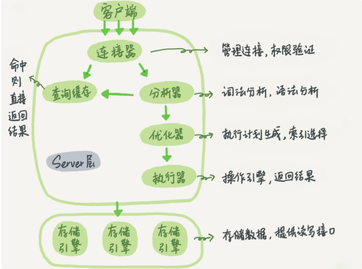
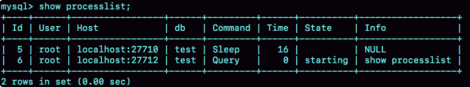

第一节 基础架构：执行一条SQL查询语句
平时我们使用数据库，看到的通常都是一个整体。比如，你有个最简单的表，表里只有一个 ID 字段，在执行下面这个查询语句时：
mysql> select * from T where ID=10；
下面是 MySQL 的基本架构示意图，可以看到 SQL 语句在 MySQL 的各个功能模块中的执行过程。

MySQL 的逻辑架构图
MySQL 可以分为 Server 层和存储引擎层两部分。
Server 层包括连接器、查询缓存、分析器、优化器、执行器等，涵盖 MySQL 的大多数核心服务功能，以及所有的内置函数（如日期、时间、数学和加密函数等），所有跨存储引擎的功能都在这一层实现，比如存储过程、触发器、视图等。
存储引擎层负责数据的存储和提取。
其架构模式是插件式的，支持 InnoDB、MyISAM、Memory 等多个存储引擎。
现在最常用的存储引擎是 InnoDB，它从 MySQL 5.5.5 版本开始成为了默认存储引擎。
- 执行 create table 建表的时候，如果不指定引擎类型，默认使用的就是 InnoDB。
- 也可以通过指定存储引擎的类型来选择别的引擎，比如在 create table 语句中使用 engine=memory, 来指定使用内存引擎创建表。
不同的存储引擎共用一个 Server 层，也就是从连接器到执行器的部分
1、连接器
第一步，连接器负责跟客户端建立连接、获取权限、维持和管理连接。
mysql -h $ip -P $port -u $user -p
连接命令中的 mysql 是客户端工具，用来跟服务端建立连接。在完成经典的 TCP 握手后，连接器就要开始认证你的身份，这个时候用的就是你输入的用户名和密码。
- 如果用户名或密码不对，你就会收到一个"Access denied for user"的错误，然后客户端程序结束执行。
- 如果用户名密码认证通过，连接器会到权限表里面查出你拥有的权限。之后，这个连接里面的权限判断逻辑，都将依赖于此时读到的权限。
这就意味着，一个用户成功建立连接后，即使你用管理员账号对这个用户的权限做了修改，也不会影响已经存在连接的权限。
修改完成后，只有再新建的连接才会使用新的权限设置。
连接完成后，如果你没有后续的动作，这个连接就处于空闲状态，你可以在 show processlist 命令中看到它。
show processlist;
文本中这个图是 show processlist 的结果，其中的 Command 列显示为“Sleep” 的这一行，就表示现在系统里面有一个空闲连接。

- 客户端如果太长时间没动静，连接器就会自动将它断开。
- 这个时间是由参数
wait_timeout控制的，默认值是 8 小时。
mysql> show variables like 'wait_timeout';
- 如果在连接被断开之后，客户端再次发送请求的话，就会收到一个错误提醒： Lost connection to MySQL server during query。这时候如果你要继续，就需要重连，然后再执行请求了。
长短链接
- 数据库里面，长连接是指连接成功后，如果客户端持续有请求，则一直使用同一个连接。
- 短连接则是指每次执行完很少的几次查询就断开连接，下次查询再重新建立一个。
- 使用中要尽量减少建立连接的动作，也就是尽量使用长连接。
数据库连接是高cost 的，大部分并发业务影建议不要使用短链接
但是全部使用长连接后，你可能会发现，有些时候 MySQL 占用内存涨得特别快，这是因为 MySQL 在执行过程中临时使用的内存是管理在连接对象里面的。这些资源会在连接断开的时候才释放。
所以如果长连接累积下来，可能导致内存占用太大，被系统强行杀掉（OOM），从现象看就是 MySQL 异常重启了。
mysql执行中一些数据绑定在连接对象中，因为长连接长时间不断开导致内存占用太多。可以使用定时超时断开，或通过重新初始化链接来清空。
两种方案:
- 定期断开长连接。使用一段时间，或者程序里面判断执行过一个占用内存的大查询后，断开连接，之后要查询再重连。(定期断开链接)
- 如果你用的是 MySQL 5.7 或更新版本，可以在每次执行一个比较大的操作后，通过执行
mysql_reset_connection来重新初始化连接资源。这个过程不需要重连和重新做权限验证，但是会将连接恢复到刚刚创建完时的状态。
2、查询缓存
连接建立完成后，你就可以执行 select 语句了。执行逻辑就会来到第二步：查询缓存。
- MySQL 拿到一个查询请求后，会先到查询缓存看看，之前是不是执行过这条语句
- 之前执行过的语句及其结果可能会以
key-value对的形式，被直接缓存在内存中- key 是查询的语句，value 是查询的结果
- 如果你的查询能够直接在这个缓存中找到 key，那么这个 value 就会被直接返回给客户端。
8.0 已经没有查询缓存的机制了
如果语句不在查询缓存中，就会继续后面的执行阶段。执行完成后，执行结果会被存入查询缓存中。
如果查询命中缓存，MySQL 不需要执行后面的复杂操作，就可以直接返回结果，这个效率会很高。
但是大多数情况下我会建议你不要使用查询缓存，为什么呢？因为查询缓存往往弊大于利。
- 缓存需要语句完全相等，包括参数
- 表更新后就会失效 因此，只有在表更新频率不高，查询语句完全一致的情况下，可以手动开启缓存，其他一律关闭。
- mysql8之后，取消了缓存功能。
查询缓存的失效非常频繁，只要有对一个表的更新，这个表上所有的查询缓存都会被清空,对于更新压力大的数据库来说，查询缓存的命中率会非常低。除非你的业务就是有一张静态表，很长时间才会更新一次。比如，一个系统配置表，那这张表上的查询才适合使用查询缓存。
好在 MySQL 也提供了这种“按需使用”的方式。
- 你可以将参数
query_cache_type设置成DEMAND，这样对于默认的SQL语句都不使用查询缓存。 - 而对于你确定要使用查询缓存的语句，可以用
SQL_CACHE显式指定，像下面这个语句一样：
mysql> select SQL_CACHE * from T where ID=10；
3、分析器
如果没有命中查询缓存，就要开始真正执行语句了。首先，MySQL 需要知道你要做什么，因此需要对 SQL 语句做解析。
分析器先会做“词法分析”。你输入的是由多个字符串和空格组成的一条 SQL 语句，MySQL 需要识别出里面的字符串分别是什么，代表什么。
MySQL 从你输入的"select"这个关键字识别出来，这是一个查询语句。
它也要把字符串“T”识别成“表名 T”，把字符串“ID”识别成“列 ID”。
- 解析语句，生成解析树
- 检查语句中的关键词，表，字段是否存在
如果你的语句不对，就会收到“You have an error in your SQL syntax”的错误提醒，比如下面这个语句 select 少打了开头的字母“s”。
mysql> elect * from t where ID=1;
ERROR 1064 (42000): You have an error in your SQL syntax; check the manual that corresponds to your MySQL server version for the right syntax to use near 'elect * from t where ID=1' at line 1
use near 'elect * from t where ID=1' at line 1
一般语法错误会提示第一个出现错误的位置，所以你要关注的是紧接“use near”的内容。
4、优化器
经过了分析器，MySQL 就知道你要做什么了。在开始执行之前，还要先经过优化器的处理。
- 优化器是在表里面有多个索引的时候，决定使用哪个索引；
- 或者在一个语句有多表关联（join）的时候，决定各个表的连接顺序。
尽可能扫描少的数据库行纪录
mysql> select * from t1 join t2 using(ID) where t1.c=10 and t2.d=20;
- 既可以先从表 t1 里面取出 c=10 的记录的 ID 值，再根据 ID 值关联到表 t2，再判断 t2 里面 d 的值是否等于 20。
- 也可以先从表 t2 里面取出 d=20 的记录的 ID 值，再根据 ID 值关联到 t1，再判断 t1 里面 c 的值是否等于 10。
这两种执行方法的逻辑结果是一样的，但是执行的效率会有不同，而优化器的作用就是决定选择使用哪一个方案。
5、执行器
Mysql执行的流程包括分析器阶段的词法分析和语法分析，优化器阶段的索引和连接顺序优化，最后由执行器开始执行。
- 分析器解释出你要做什么；
- 优化器解释出你需要该怎么做；
- 执行器负责执行。
开始执行的时候，要先判断一下你对这个表 T 有没有执行查询的权限，如果没有，就会返回没有权限的错误，如下所示 (在工程实现上，如果命中查询缓存，会在查询缓存返回结果的时候，做权限验证。查询也会在优化器之前调用 precheck 验证权限)。
权限验证不仅仅在执行器这部分会做，在分析器之后，也就是知道了该语句要“干什么”之后，也会先做一次权限验证。叫做precheck。而precheck是无法对运行时涉及到的表进行权限验证的，比如使用了触发器的情况。因此在执行器这里也要做一次执行时的权限验证。
mysql> select * from T where ID=10;
ERROR 1142 (42000): SELECT command denied to user 'b'@'localhost' for table 'T'
如果有权限，就打开表继续执行。打开表的时候，执行器就会根据表的引擎定义，去使用这个引擎提供的接口。
比如我们这个例子中的表 T 中，ID 字段没有索引，那么执行器的执行流程是这样的：
- 调用 InnoDB 引擎接口取这个表的第一行，判断 ID 值是不是 10，如果不是则跳过，如果是则将这行存在结果集中；
- 调用引擎接口取“下一行”，重复相同的判断逻辑，直到取到这个表的最后一行。
- 执行器将上述遍历过程中所有满足条件的行组成的记录集作为结果集返回给客户端。
对于有索引的表，执行的逻辑也差不多。第一次调用的是“取满足条件的第一行”这个接口，之后循环取“满足条件的下一行”这个接口，这些接口都是引擎中已经定义好的。
- 你会在数据库的慢查询日志中看到一个
rows_examined的字段，表示这个语句执行过程中扫描了多少行。 - 这个值就是在执行器每次调用引擎获取数据行的时候累加的。
一个是执行器调用的次数。 一个是引擎总共扫描行数。
在有些场景下，执行器调用一次，在引擎内部则扫描了多行，因此引擎扫描行数跟 rows_examined 并不是完全相同的。
6、小节总结
6-1 提问
如果表 T 中没有字段 k，而你执行了这个语句 select * from T where k=1, 那肯定是会报“不存在这个列”的错误：“Unknown column ‘k’ in ‘where clause’”。
你觉得这个错误是在我们上面提到的哪个阶段报出来的呢？
分析器。
- 解析语句，生成解析树
- 检查语句中的关键词，表，字段是否存在